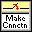
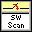
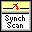
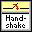
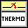

NI-SWITCH 包含几个示例应用程序，用于演示设备的功能，并可用作您自己的应用程序的交互式工具、编程模型和构建块。
NI Example Finder 是一个实用工具，可将示例组织成类别并允许您浏览和搜索已安装的示例。例如，搜索“ SWITCH ”以找到所有 NI 开关示例。您可以查看每个示例的说明和兼容的硬件模型，或者查看与一个特定硬件模型兼容的所有示例。
要使用 LabVIEW 或 LabWindows/CVI 中的 NI 示例查找器查找示例，请选择帮助»查找示例并导航至硬件输入和输出»模块化仪器» NI-SWITCH。
| 软件应用 | 安装示例位置 |
|---|---|
| LabVIEW 或 LabWindows/CVI | 在 LabVIEW 或 LabWindows CVI 中，选择帮助»查找示例并导航至硬件输入和输出»模块化仪器。 |
| ANSI C 或 Microsoft Visual C/C++ | <NIDocDir>\NI-SWITCH\examples，其中<NIDocDir>是以下目录之一：
|
| NI-SWITCH 示例 | 描述 | |
|---|---|---|
|  | NI-SWITCH 在交换机上建立连接 | 此示例演示如何连接和断开矩阵开关模块上的通道。 |
|  | NI-SWITCH 软件扫描 | 此示例演示如何使用软件扫描扫描交换机上的一系列通道。 |
|  | NI-SWITCH 数字万用表开关同步扫描 | 此示例演示如何扫描开关模块上的一系列通道并使用 NI 数字万用表使用同步扫描进行测量。需要 NI-DMM 2.0 或更高版本。 |
|  | NI-SWITCH 数字万用表开关握手 | 此示例演示如何扫描开关模块上的一系列通道并使用 NI 数字万用表通过握手进行测量。需要 NI-DMM 2.0 或更高版本。 |
| NI-SWITCH 控制单个继电器 | 此示例演示如何控制开关模块上的单个继电器。 | |
|  | NI-SWITCH 热电偶测量 | 此示例演示如何扫描 NI PXI-2527 开关模块上的一系列热电偶通道。需要 NI-DMM 2.0 或更高版本。 |